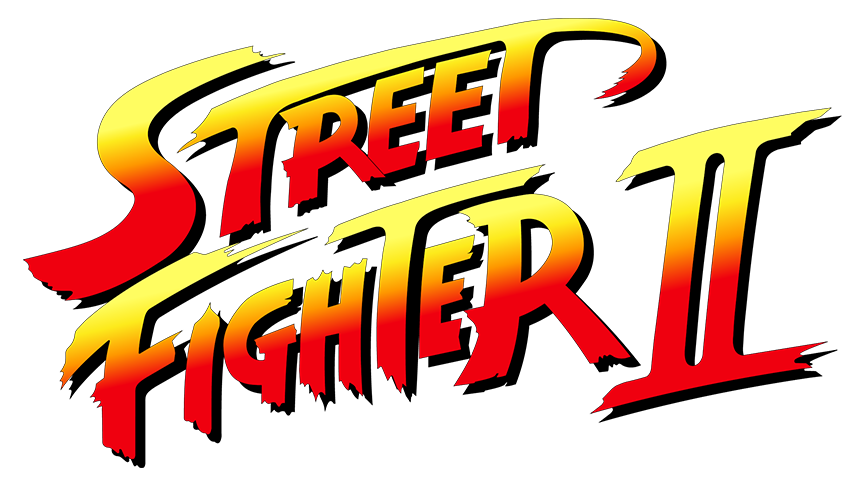
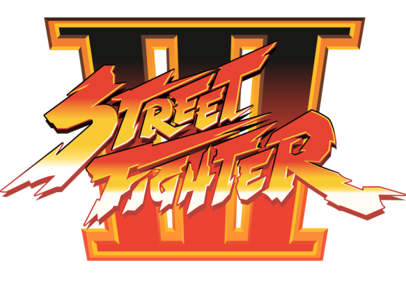
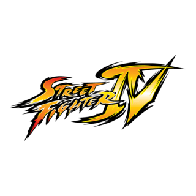
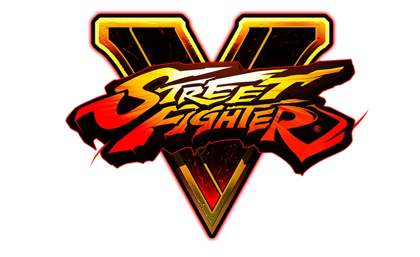
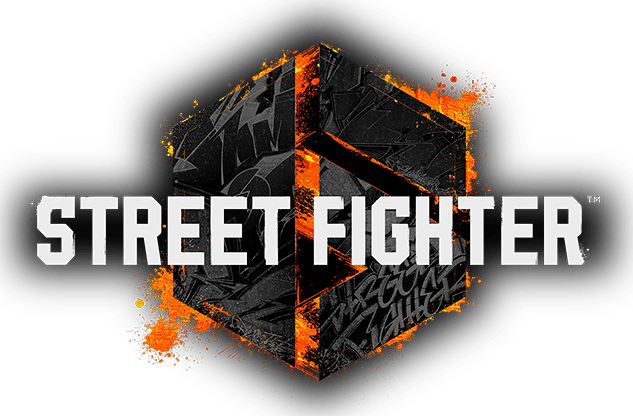

Street Fighter: a lenda dos jogos de luta
Street Fighter é a franquia que definiu o gênero de jogos de luta. Com um elenco icônico como Ryu, Ken e Chun-Li, o sistema de combos e estratégia estabeleceu padrão para competições em todo o mundo desde 1987.
🎮 Jogos da Série Street Fighter

- 
- 
- 
- 
- 
📅 Ordem Cronológica Canônica
🧬 Sinopse da História
Street Fighter gira em torno do tornou Rugal, M. Bison e Shadaloo, enquanto guerreiros de várias partes do mundo treinam e lutam para provar suas habilidades. A vida dos personagens é marcada por rivalidade, honra e superação.